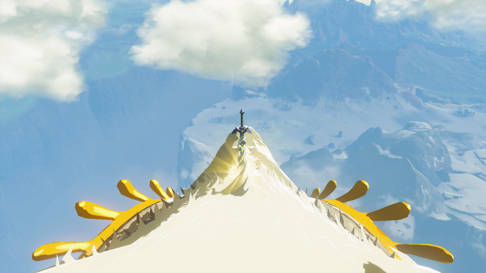

大师之剑插在白龙头顶（游戏实机截图，图片来源：Zelda Wiki）
大师之剑是海拉鲁大陆的灵魂象征，不仅拥有永不损毁（能量耗尽后充能10分钟即可自愈）的特性，在面对瘴气魔物与盖侬时更会自动觉醒圣光状态，攻击力与耐久大幅翻倍。这篇攻略把拔剑的全部流程讲清楚：先搞懂大师之剑到底强在哪，再把两圈精力攒够，然后找到白龙、把它从两千米高空降下来，最后落到龙头上拔剑。按这个顺序走，一次就能成。
一、大师之剑到底强在哪
先说结论：大师之剑不是全游戏攻击力最高的武器，但它是唯一一把永不损毁、还能自我修复的武器。能量耗尽后等 10 分钟，它自己就满血复活了，不用修、不用换。对喜欢正面硬刚的玩家来说，这把剑的意义在于“永远有剑可用”，不用担心打到一半武器碎了。
大师之剑的攻击力分三档：平时是 30，靠近瘴气的时候会觉醒到 45，打幻影加侬和加侬多夫的时候直接到 60。所以打最终 Boss 之前把大师之剑拿到手，最后一战会轻松很多。平时清小怪用 30 攻击也够用，关键是它不会碎，打完一组怪等它充能就行。
有一点要注意：大师之剑不能融合素材。余料建造可以给普通武器贴上各种素材加攻击，但大师之剑不行，它就是一把纯粹的剑。所以它的上限就是 60，不能再往上堆。别想着给它贴个白银人马刃角，贴不上去的。
二、核心前置条件：两圈精力怎么攒
拔剑只有一个硬门槛：两圈精力。在初始一圈的基础上，再兑换 5 个精力容器。每个精力容器要 4 个祝福之光，所以一共需要 20 个祝福之光，也就是完成 20 座神庙。这个条件没有捷径，必须老老实实打神庙。
- 精力槽硬性门槛：拔出大师之剑需要整整 2 整圈精力槽（即在初始 1 圈的基础上，额外提升 5 次精力容器，累计需完成 20 座神庙获得 20 个祝福之光）。
- 祝福之光怎么换：拿着祝福之光去任意一座女神像前，4 个祝福之光可以换 1 个心之容器或者 1 个精力容器。想拔剑就全换精力，别手抖换成红心。
- 红心还是精力：如果红心已经够用了（比如 10 颗以上），就把祝福之光全投给精力。拔剑之后再慢慢补红心也不迟。反过来如果红心太少，打怪容易死，也可以先换几颗红心再攒精力，不用死磕顺序。
- 重要禁忌：吃料理烹饪获得的“黄色额外精力”在拔剑 QTE 中完全无效！若精力未达两圈强行拔剑，林克会被白龙甩飞扣血并拔剑失败。
攒 20 座神庙听起来多，但其实不难。地面上有 120 座神庙，前期跟着主线走，顺路就能开十几座。卡卡利科村、利特村、卓拉领地这些地方的神庙都比较简单，优先做。天空神庙也可以做，但有些需要解谜，费时间，前期先跳过也行。关键是别拖，精力不够就拔不了剑，早点攒够早点拿。
三、找到白龙：它飞多高、怎么追踪
白龙默认巡航在海拉鲁两千米极高空，普通鸟望台难以企及。白龙一直在海拉鲁上空绕圈飞，路线是固定的，但飞得太高，肉眼很难锁定。想拔剑，第一步是先把它找出来，再想办法让它飞低一点。

追踪白龙与大师之剑的试炼之路（游戏实机截图，图片来源：Zelda Wiki）
白龙的巡游路线覆盖整个海拉鲁，从北边的雪山到南边的沙漠都会经过。它飞得很高，从地面上看只是一个小白点，很难追。最靠谱的办法是先做降高方案（下面第四、第五节），把它的高度降下来，再去追。直接硬追两千米高空的白龙，基本追不上，别浪费时间。
如果你已经完成了克洛格森林净化（方案 A），德库树长老会在大地图上实时点亮大师之剑的移动标记，跟着标记走就行。如果你走的是龙之泪路线（方案 B），剧情播完后白龙会直接飞到低空，在附近就能看到。这两种方法都能让你锁定白龙的位置，不用满地图瞎找。
四、降高方案A：克洛格森林净化（强烈推荐）
这是最推荐的方案。净化完克洛格森林，不仅白龙高度直接降到约 700 米，还能在大地图上看到它的实时标记，追起来最省事。而且净化过程本身就是一段主线剧情，做完之后对理解剧情也有帮助。
1从齐罗利森林深穴潜入地底。克洛格森林在地面上被迷雾封着，直接走是进不去的。要先找到齐罗利森林附近的深穴，跳进地底世界，再用通天术从地底穿出来，直接落到迷失森林的中心。通天术在这里是关键，没有它进不去。
2进入德库树长老体内，击败瘴气手与幻影加农。德库树长老被瘴气侵蚀了，体内有一场 Boss 战。先打瘴气手，再打幻影加农。打之前准备好强力武器和回复料理，幻影加农的攻击力不低，血量也不少，别轻敌。打完之后德库树就净化了。
3和德库树长老对话，拿到白龙标记。净化成功后，和德库树长老对话，长老会在大地图上实时点亮大师之剑的移动标记，并将白龙的巡航高度从 2000 米直接降低至约 700 米。此时只需传送到就近的鸟望台弹射升空，即可轻松滑翔落到白龙龙头上。
降到 700 米之后，白龙就很好追了。找一个离白龙当前位置最近的鸟望台，弹射到空中，开滑翔伞往白龙的方向飞。飞到白龙上方之后，收起滑翔伞自由落体，落到龙背上就行。注意别落到龙身中间，龙身一直在动，容易滑下去。直接瞄准龙头落，最稳。
五、降高方案B：龙之泪主线全收集
如果你不想打克洛格森林的 Boss 战，也可以走龙之泪路线。集齐全部龙之泪，看完最后一段回忆，白龙会自己飞到低空来找你。这个方案不用打 Boss，但要跑遍整个海拉鲁找 11 个地上图画，比较花时间。

英帕与地上图画、龙之泪（游戏实机截图，图片来源：Zelda Wiki）
1寻访海拉鲁大陆上的全部 11 个地上图画并观看龙之泪回忆。地上图画散落在海拉鲁各地，每个图画对应一段龙之泪回忆。找图画的时候可以先去找英帕，她会给你提示。每个图画旁边都有一颗龙之泪，靠近就能触发回忆剧情。
2触发阿卡莱玛秋斯半岛的第 12 个终极回忆剧情。看完 11 段回忆之后，最后一段回忆会在阿卡莱玛秋斯半岛触发。这是整个龙之泪主线的收尾，看完之后你就明白白龙到底是谁了。
3剧情播毕后，白龙会直接在近空啼鸣出现并维持低空飞行。第 12 段回忆看完，白龙会直接飞到你附近的低空，不用再追两千米。直接传送至附近乌尔利山鸟望台即可登龙。
龙之泪路线的好处是不用打 Boss，坏处是跑图花时间。11 个图画分布在海拉鲁各地，找齐要花几个小时。如果你本来就想把龙之泪主线做完，顺手拔剑是最划算的。如果你只想快点拿剑，方案 A（克洛格森林）更快。两个方案二选一就行，不用都做。
龙之泪一共有 12 处，看完能解锁一段很重要的剧情。如果你对剧情感兴趣，强烈建议把龙之泪做完再去拔剑，拔剑那一刻的感受会完全不一样。查看龙之泪的完整位置：四条龙素材刷取指南。
六、拔剑：落到龙头上之后怎么做
不管走哪个方案，最后一步都一样：落到白龙头上，拔剑。这一步操作本身不难，但有几个细节要注意，做错了会被甩下去。
- 瞄准龙头落：从鸟望台弹射升空后，开滑翔伞往白龙的方向飞。飞到白龙正上方之后，收起滑翔伞，自由落体。瞄准龙头落，别落到龙身中间，龙身一直在摆动，容易滑下去。
- 走向额头的剑：降落到白龙头部后，走向额头闪耀圣光的剑身前。龙头是平的，站得稳，不用担心掉下去。慢慢走过去，别跑，跑起来容易滑。
- 按住 A 键拔剑：走到剑身前，按下 A 键交互，按住 A 键消耗两圈精力完成拔剑震撼过场。拔剑的时候会有一个 QTE，要一直按住 A 键别松手，精力会一点一点消耗。两圈精力正好够拔出来，别中途松手。
- 精力不够会怎样：如果精力不到两圈就强行拔剑，林克会被白龙甩飞，扣一格血，拔剑失败。别抱侥幸心理，精力不够就先去攒，攒够了再来。白龙不会跑，一直在天上飞，随时都能来拔。
拔剑成功之后会播一段过场动画。看完动画，大师之剑就是你的了。别急着传送走，先把白龙身上的素材刷了再走（下一节讲）。
七、拔剑后别急着走：白龙素材怎么刷
拔剑后勿立即传送：白龙身上的素材具有极高价值！白龙龙角、龙牙、龙鳞、龙爪附魔在武器上时，林克每次攻击命中敌人都将获得红心吸血效果。也就是说，贴了白龙素材的武器，打怪能回血，非常实用。
- 白龙龙角：在龙角处攻击一次拾取龙角后，静待 10 分钟龙角再次发光即可重复采集。龙角是最值钱的素材，优先刷。
- 白龙龙牙：用弓箭射龙的嘴部，掉落龙牙。龙牙的吸血效果和龙角一样，都是打怪回血。
- 白龙龙鳞：射龙身上的鳞片，掉落龙鳞。龙鳞也可以用来做料理和升级防具。
- 白龙龙爪：射龙的爪子，掉落龙爪。龙爪的吸血效果同样好用。
刷素材的方法很简单：站在龙背上，用弓箭射你想要的部位，素材掉下来之后去捡。每个部位 10 分钟刷新一次，可以反复刷。龙角刷新最慢但价值最高，建议优先刷龙角。刷够了再传送走，不用急，白龙飞得很稳，站在上面很安全。
八、实战用法与常见问题
大师之剑什么时候用最好？
大师之剑最适合打瘴气怪、幻影加侬和加侬多夫。靠近瘴气的时候攻击力到 45，打幻影加侬和加侬多夫的时候到 60，是全游戏打最终 Boss 最好用的武器之一。平时清小怪用普通武器就行，把大师之剑的能量留到打硬仗的时候。
能量耗尽了怎么办？
大师之剑的能量耗尽后，等 10 分钟就自己充满了，不用修、不用换。你可以传送到别的地方做点别的事，10 分钟一到它就满了。别在原地傻等，浪费时间。
大师之剑能融合素材吗？
不能。大师之剑不能融合任何素材，它的攻击力上限就是 60（打加侬的时候）。想堆攻击力的话，用普通武器融合白银人马刃角之类的素材，大师之剑走的是“永不损毁 + 高基础攻击”的路线。
拔剑失败了怎么办？
拔剑失败一般是因为精力不够。被甩下来之后，先去攒够两圈精力再来。白龙一直在天上飞，不会消失，随时都能再去拔。别灰心，攒够精力一次就能成。
大师之剑和七宝匕首哪个更好？
两个定位不一样。七宝匕首可以融合素材堆攻击，单发伤害更高，但会碎、要修。大师之剑攻击力固定 30/45/60，但永不损毁、自己充能。打 Boss 推荐大师之剑（稳定 + 60 攻击），平时刷怪推荐七宝匕首这类可融合武器（伤害上限更高）。两个都带着，换着用最好。